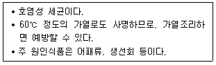
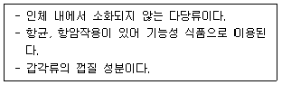
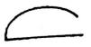
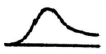
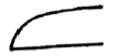
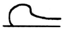

식품기사 (2022-03-05 기출문제)
1과목: 식품위생학
1. 식품에 사용되는 기구 및 용기, 포장의 기준 및 규격으로 틀린것은?
- 전류를 직접 식품에 통하게 하는 장치를 가진 기구의 전극은 철, 알루미늄, 백금, 티타늄 및 스테인리스 이외의 금속을 사용해서는 안된다.
- 기구 및 용기, 포장의 식품과 접촉하는 부분에 사용하는 도금용 주석 중 납은 0.10% 이하여야 한다.
- 기구 및 용기, 포장 제조 시 식품과 직접 접촉하지 않는 면에도 인쇄를 해서는 안된다.
- 기구 및 용기, 포장의 식품과 접촉하는 부분에 제조 또는 수리를 위하여 사용하는 금속 중 납은 0.1%이하 또는 안티몬은 5.0%이하여야 한다.
(정답률: 89%)

2. 다음 중 수용성인 산화방지제는?
- Ascorbic acid
- Butylated hydroxy anisole (BHA)
- Butylated hydroxy toluene (BHT)
- Propyl gallate
(정답률: 94%)
3. 자연독 식중독 중 곰팡이와 관련이 없는 것은?
- 황변미독
- 맥각독
- 아플라톡신
- 셉신
(정답률: 78%)
4. 치즈에 대한 기준 및 규격으로 틀린 것은?
- 자연치즈는 원유 또는 유가공품에 유산균, 응유효소, 유기산 등을 응고시킨 후 유청을 제거하여 제조한 것이다.
- 모조치즈는 식용유지가공품이다.
- 가공치즈는 모조치즈에 식품첨가물을 가해 유화시켜 가공한 것이나 모조치즈에서 유래한 유고형분이 50%이상인 것이다.
- 모조치즈는 식용유지와 단백질 원료를 주원료로 하여 이에 식품 또는 식품첨가물을 가하여 유화시켜 제조한 것이다.
(정답률: 88%)
5. 방사선 조사식품에 대한 설명으로 틀린 것은?
- 식품을 일정 시간 동안 이온화 에너지에 노출시킨다.
- 발아 억제, 숙도 지연, 보존성 향상, 기생충 및 해충 사명 등의 효과가 있다.
- 일반적으로 식품을 포장하기 전에 조사처리를 하고 그 후 건조 또는 탈기한다.
- 한 번 조사처리한 식품은 다시 조사하여서는 아니 된다.
(정답률: 74%)
6. 식품위생 분야 종사자 (식품을 제조, 가공하는데 직접 종사하는 사람)의 건강진단 항목이 아닌 것은?
- 장티푸스(식품위생 관련 영업 및 집단급식소 종사자만 해당한다.)
- 폐결핵
- 전염성 피부질환 (한센병 등 세균성 피부질환을 말한다)
- 갑상선 검사
(정답률: 93%)
7. 다음 설명과 관계 깊은 식중독균은?

- 살모넬라균
- 병원성 대장균
- 장염비브리오
- 캠필로박터
(정답률: 87%)
8. 식품위생법상 식품 위생감시원의 직무가 아닌 것은?
- 식품 등의 위생적인 취급에 관한 기준의 이행지도
- 출입, 검사 및 검사에 필요한 식품 등의 수거
- 중요관리점 (CCP) 기록 관리
- 행정처분의 이행여부 확인
(정답률: 47%)
9. 미생물에 의한 품질저하 및 손상을 방지하여 식품의 저장수명을 연장시키는 식품첨가물은?
- 산화 방지제
- 보존료
- 살균제
- 표백제
(정답률: 95%)
10. 식품 가공을 위한 냉장/냉동 시설 설비의 관리 방법으로 틀린 것은?
- 냉장시설은 내부 온도를 10℃이하로 유지한다.
- 냉동 시설은 –18℃이하로 유지한다.
- 온도 감응 장치의 센서는 온도가 가장 낮게 측정되는 곳에 위치하도록 한다.
- 신선편의식품, 훈제연어, 가금육은 5℃이하로 유지한다.
(정답률: 74%)
11. HACCP에 대한 설명으로 틀린 것은?
- 위험요인이 제조, 가공 단계에서 확인되었으나 관리할 CCP가 없다면 전체 공정 중에서 관리되도록 제품 자체나 공정을 수정한다.
- CCP의 결정은 “CCP 결정도”를 활용하고 가능한 CCP 수를 최소화하여 지정하는 것이 바람직하다.
- 모니터된 결과 한계 기준 이탈 시 적절하게 처리하고 개선조치 등에 대한 기록을 유지한다.
- 검증은 CCP의 한계기준의 관리 상태 확인을 목적으로 하고 모니터링은 HACCP 시스템 전체의 운영 유효성과 실행여부평가를 목적으로 수행한다.
(정답률: 20%)
12. 식품의 기준 및 규격(총칭)에 의거하여 방사성물질 누출 사고 발생시 관리해야 할 방사성 핵종 중 우선 선정하는 대표적 방사성 오염 지표 물질 2가지는?
- 라듐, 토륨
- 요오드, 세슘
- 플루토늄, 스트론튬
- 라돈, 우라늄
(정답률: 60%)
13. 다음 중 먹는물의 건강상 유해영향 유기물질 검사항목이 아닌 것은?
- 디클로로메탄
- 벤젠
- 톨루엔
- 시안
(정답률: 36%)
14. A군 β-용혈성 연쇄상구균에 의해서 발병하는 발열성 경구감염병은?
- 디프테리아
- 성홍열
- 감염성설사증
- 천열
(정답률: 67%)
15. 미생물이 성장할 수 있는 수분활성도의 일반적인 최소한계점은?
- 0.71
- 0.61
- 0.81
- 0.51
(정답률: 67%)
16. 식품을 경유하여 인체에 들어왔을 때 반감기가 길고 칼슘과 유사하여 뼈에 축적되며, 백혈병을 유발할 수 있는 방사성 핵종은?
- 스트론튬 90
- 바륨 140
- 요오드 131
- 코발트 60
(정답률: 50%)
17. 식품위생법상 위생 검사 등의 식품위생검사기관이 아닌 것은?
- 식품의약품안전평가원
- 지방식품의약품안전청
- 시도보건환경연구원
- 보건소
(정답률: 75%)
18. 자연독을 함유하고 있는 식물과 독소의 연결 중 틀린 것은?
- 독버섯 – 아마니타톡신(amanitatoxin)
- 피마자 – 리신 (ricin)
- 독미나리 – 테물린 (temulline)
- 목화씨 – 고시폴(gossypol)
(정답률: 71%)
19. 어패류가 감염원이 아닌 기생충은?
- 선모충
- 간디스토마
- 유극악구충
- 고래회충
(정답률: 74%)
20. 기생충에 감염됨으로써 일어나는 피해에 대한 설명으로 가장 거리가 먼 것은?
- 영양물질의 손실
- 조직의 파괴
- 자극과 염증 유발
- 유행성 간염
(정답률: 58%)
2과목: 식품화학
21. 우유 단백질 간의 이황화결합을 촉진시키는데 관여하는 것은?
- 설프하이드릴(sulfhydryl)기
- 이미다졸 (imidazole)기
- 페놀(phenol)기
- 알킬(alkyl)기
(정답률: 43%)
22. 식품 관련 유해물질인 니켈에 대한 설명으로 틀린 것은?
- 각종 주방기구의 제조에 사용될 수 있다.
- 식품에 포함된 니켈의 대부분이 소화기관을 통해 흡수되고, 인체 흡수경로는 주로 식품 섭취에 기인한다.
- 농산물, 가공식품을 통해 섭취될 수 있다.
- 고농도 니켈에 노출되면 폐 또는 부비(강)암, 신장독성, 기관지 협착 등이 발생한다.
(정답률: 28%)
23. 육류나 육류 가공품의 육색소를 나타내는 주된 성분으로 근육세포에 함유되어 있는 것은?
- 미오글로빈 (myoglobin)
- 헤모글로빈 (hemoglobin)
- 시토스테롤(sitosterol)
- 시토크롬(cytocrome)
(정답률: 82%)
24. 단당류 중 glucose와 mannose는 화학구조적으로 어떤 관계인가?
- anomer
- epimer
- 동위원소
- acetal
(정답률: 40%)
25. 식품 등의 표시기준에 의한 알코올과 유기산의 열량 산출 기준은?
- 알코올은 1g당 4kcal, 유기산은 1g당 4kcal를 각각 곱한 값의 합으로 한다.
- 알코올은 1g당 9kcal, 유기산은 1g당 2kcal를 각각 곱한 값의 합으로 한다
- 알코올은 1g당 7kcal, 유기산은 1g당 3kcal를 각각 곱한 값의 합으로 한다.
- 알코올은 1g당 4kcal, 유기산은 1g당 2kcal를 각각 곱한 값의 합으로 한다.
(정답률: 48%)
26. 아밀로오스 분자의 비환원성 말단으로부터 maltose 단위로 가수분해시키는 효소는?
- α-amylose
- β-amylose
- glucoamylase
- amylo-1,6-glucosidase
(정답률: 40%)
27. 효소에 의한 과실 및 채소의 갈변을 억제하는 방법으로 가장 관계가 먼 것은?
- 데치기 (blanching)
- 최적 조건 (온도, pH 등)의 변동
- 산소의 제거
- 철, 구리 용기 사용
(정답률: 84%)
28. 알라닌 (alanine)이 strecker 반응을 거치면 무엇으로 변하는가?
- acetic acid
- ethanol
- acetamide
- acetaldehyde
(정답률: 24%)
29. 다음 중 환원당이 아닌 것은?
- 맥아당
- 유당
- 설탕
- 포도당
(정답률: 71%)
30. 관능검사 방법 중 종합적 차이 검사에 사용하는 방법이 아닌 것은?
- 일-이점 검사
- 삼점 검사
- 단일 시료 검사
- 이점 비교 검사
(정답률: 60%)
31. 전분의 호화와 노화의 관계 요인에 대한 설명으로 틀린 것은?
- 수분이 많을수록 호화가 잘 일어나며 적으면 느리다.
- 알칼리 염류는 팽윤을 지연시켜 gel 형성온도, 즉 호화 온도를 높여준다.
- 설탕은 자유수의 탈수와 수소결합 저하의 역할로 노화를 억제한다.
- 전분의 팽윤과 호화는 적당한 범위의 알칼리성으로 촉진된다.
(정답률: 54%)
32. 뉴턴 유체에 해당하지 않는 것은?
- 물
- 유탁액
- 청량음료
- 식용유
(정답률: 50%)
33. 식품과 그 식품이 함유하고 있는 단백질이 서로 잘못 연결된 것은?
- 소맥-프롤라민(prolamine)
- 난백-알부민(albumin)
- 우유-글루테린(glutelin)
- 옥수수-제인(zein)
(정답률: 72%)
34. 관능검사법의 장소에 따른 분류 중 이동수레 (mobile serving cart)를 활용하여 소비자 기호도 검사를 수행하는 방법은?
- 중심지역 검사
- 실험실 검사
- 가정사용 검사
- 직장사용 검사
(정답률: 79%)
35. 식품에 존재하는 수분에 대한 설명 중 틀린 것은?
- 어떤 임의의 온도에서 식품이 나타내는 수증기압을 그 온도에서 순수한 물의 수증기압으로 나눈 것을 수분활성도라고 한다.
- 수용성 단백질, 설탕, 중성지질, 포도당, 비타민 E로 구성된 식품에서 수분활성도에 영향을 미치지 않는 성분은 중성지질과 비타민 E이다.
- 식품 내 수용성 물질과 수분은 주로 이온결합을 통해 수화 (hydration)상태로 존재한다.
- 결합수는 식품 성분과 수소결합으로 연결되어 있어 탈수나 건조 등에 의해 쉽게 제거되지 않는다.
(정답률: 48%)
36. 식품 중 단백질 변성에 대한 설명 중 옳은 것은?
- 단백질 변성이란 공유결합 파괴 없이 분자 내 구조 변형이 발생하여 1,2,3,4차 구조가 변화하는 현상이다.
- 결합조직 중 collagen은 가열에 의해 gelatin으로 변성된다.
- 어육의 경우 동결에 의해 물이 얼음으로 동결되면서 단백질 입자가 상호 접근하여 결합되는 염용 (salting-in)현상이 주로 발생한다.
- 우유 단백질인 casein의 경우 등전점 부근에서 가장 잘 변성이 되지 않는다.
(정답률: 38%)
37. 식품의 변색 반응에 대한 설명 중 연결이 옳지 않은 것은?
- 설탕의 가열 : caramelization-> caramel
- 새우, 게의 가열 : astaxanthin-> astacin
- 된장의 갈색 착색 : aminocarbony 반응-> melanoidine
- 절단 사과의 갈색 변색 : tyrosinase에 의한 산화-> melanin
(정답률: 58%)
38. 옥수수를 주식으로 하는 저소득층의 주민들 사이에서 풍토병 또는 유행병으로 알려진 질병의 원인을 알기 위하여 연구한 끝에 발견된 비타민은?
- 나이아신
- 비타민 E
- 비타민 B2
- 비타민 B6
(정답률: 50%)
39. 분자식은 C6H14O6 이며 포도당을 환원시켜 제조하고 백색의 알맹이, 분말 또는 결정성 분말로서 냄새가 없고 청량한 단맛이 있는 식품 첨가물은?
- D-sorbitol
- Xylitol
- inositol
- D-dulcitol
(정답률: 65%)
40. 각 식품별로 분산매와 분산상 간의 관계가 순서대로 연결된 것은?
- 마요네즈 : 액체 - 액체
- 우유 : 고체 - 기체
- 캔디 : 액체 - 고체
- 버터 : 고체 - 고체
(정답률: 59%)
3과목: 식품가공학
41. 난백분의 제조법에 대한 설명 중 틀린 것은?
- 난액 중 흰자위만을 건조 시켜 가루로 만든 것이다.
- 난백분은 당 성분을 제거한 후 건조시킨다.
- 흰자위를 분리 즉시 그대로 건조시켜야 용해도가 높고 색도 좋아진다.
- 건조시키기 전에 발효시키면 흰자위의 분리가 용이하다.
(정답률: 47%)
42. 감의 떫은 맛을 제거한 침시를 만들 때 사용하는 방법이 아닌 것은?
- 온탕법
- 알코올법
- 효소법
- 탄산가스법
(정답률: 34%)
43. 식품의 유통 기한 설정에 관한 설명으로 틀린 것은?
- 유통기한 설정 시 품질변화의 지표 물질은 반응 속도에서 높은 반응차수를 갖는 것이 바람직하다.
- 장기간 유통조건 하에서 관능검사를 통하여 유통 기한을 설정할 수 있다
- 유통 중 품질 변화를 반응 속도론에 근거하여 수학적으로 예측하여 유통기한을 설정할 수 있다.
- 유통 기한 설정의 조건 인자에는 저장시간, 수분함량, 온도, pH 등이 있다.
(정답률: 29%)
44. 육류 가공 시 보수성에 영향을 미치는 요인과 가장 거리가 먼 것은?
- 근육의 pH
- 유리아미노산의 양
- 이온의 영향
- 근섬유간 결합상태
(정답률: 54%)
45. 과일 주스 제조 시에 혼탁을 방지하기 위하여 사용되는 효소는?
- protease
- amylase
- pectinase
- lipase
(정답률: 67%)
46. 유지 용제 추출법에 사용되는 용제의 구비조건으로 틀린 것은?
- 유지 및 기타 물질을 잘 추출할 것
- 유지 및 착유박에 나쁜 냄새 및 독성이 없을 것
- 기화열 및 비열이 작아 회수하기가 쉬울 것
- 인화 및 폭발하는 등의 위험성이 적을 것
(정답률: 50%)
47. 다음 중 도정도 결정에 사용되는 방법이 아닌 것은?
- 색에 의한 방법
- 도정시간에 의한 방법
- 생성되는 쌀겨량에 의한 방법
- 추의 무게를 측정하는 방법
(정답률: 74%)
48. 평판의 표면 온도는 120℃이고 주위 온도는 20℃이며 금속평판으로부터의 열플럭스 속도가 1000W/m2일 때, 대류열전달계수는?
- 50W/m2·℃
- 30W/m2·℃
- 10W/m2·℃
- 5W/m2·℃
(정답률: 29%)
49. 일반적인 CA 저장 설비 장치가 아닌 것은?
- 냉각장치
- N2 흡수장치
- CO2 흡수장치
- 온도, 습도 센서
(정답률: 63%)
50. 두부 제조 시 소포제를 어떤 공정에서 사용하는가?
- 침지
- 마쇄
- 응고
- 가열
(정답률: 36%)
51. 20℃의 물 1kg을 –20℃의 얼음으로 만드는데 필요한 냉동부하는? (단, 물의 비열은 1.0kcal/kg℃, 얼음의 비열은 0.5kcal/kg℃, 물의 융해잠열은 79.6kcal/kg℃이다)
- 100kcal
- 110kcal
- 120kcal
- 130kcal
(정답률: 58%)
52. 반경질치즈 제조 시 일반적인 수율은?
- 15%
- 20%
- 7%
- 10%
(정답률: 8%)
53. 유지의 융점에 대한 설명 중 틀린 것은?
- 지방산의 탄소수가 증가할수록 융점이 높다.
- cis형이 trans형보다 높다.
- 포화지방산보다 불포화지방산으로 된 유지가 융점이 낮다.
- 탄소수가 짝수번호인 지방산은 그 번호 다음 홀수번호 지방산보다 융점이 높다.
(정답률: 36%)
54. 아미노산 간장 제조에 사용되지 않는 것은?
- 코지
- 탈지대두
- 염산용액
- 수산화나트륨
(정답률: 58%)
55. 아래 설명에 해당하는 성분은?

- 알긴산
- 펙틴
- 카라기난
- 키틴
(정답률: 86%)
56. 전분의 효소가수분해 물질 중 DE (dextrose equivalent) 20 이하의 저당화당인 제품은?
- glucose (포도당)
- starch syrup (물엿)
- maltodextrin (말토덱스트린)
- fructose(과당)
(정답률: 57%)
57. 피부 건강에 도움을 주는 건강기능식품 원료가 아닌 것은?
- 알로에 겔
- 쏘팔메토열매추출물
- 엽록소 함유 식물
- 클로렐라
(정답률: 54%)
58. 다음 페리노 그래프 중 강력분을 나타내는 것은?




(정답률: 75%)
59. 발효유 제품 제조시 젖산균 스타터 사용에 대한 설명으로 틀린 것은?
- 우리가 원하는 절대적 다수의 미생물을 발효시키고자 하는 기질 또는 식품에 접종시켜 성장하도록 하므로 원하는 발효가 일어나도록 해준다.
- 원하지 않는 미생물의 오염과 성장의 기회를 극소화한다.
- 균일한 성능의 발효미생물을 사용함으로써 자연발효법에 의하여 제조되는 제품보다 품질이 균일하고, 우수한 제품을 많이 생산할 수 있다.
- 발효미생물의 성장속도를 조정할 수 없어서 공장에서 제조계획에 맞출 수 없다.
(정답률: 82%)
60. 농축장치를 사용하여 오렌지주스를 농축하고자 한다. 원료인 오렌지 주스는 7.08%의 고형분을 함유하고 있으며, 농축이 끝난 제품은 58% 고형분을 함유하도록 한다. 원료주스를 100kg/h의 속도로 투입할 때 증발 제거되는 수분의 양 (W)과 농축주스의 양(C)은 얼마인가?
- W = 75.0kg/h, C=25.0kg/h
- W = 25.0kg/h, C=75.0kg/h
- W = 87.8kg/h, C=12.2kg/h
- W = 12.1kg/h, C=87.8kg/h
(정답률: 27%)
4과목: 식품미생물학
61. 효모의 Protoplast 제조 시 세포벽을 분해시킬 수 없는 효소는?
- β-glucosidase
- β-glucuronidase
- laminarinase
- snail enzyme
(정답률: 43%)
62. Gram 양성균에 해당되지 않는 것은?
- Streptococcus lactis
- Escherichia coli
- Staphylococcus aureus
- Lactobacillus acidophilus
(정답률: 56%)
63. 광합성 무기영양균 (phtolithotroph)의 특징이 아닌 것은?
- 에너지원을 빛에서 얻는다.
- 탄소원을 이산화탄소로부터 얻는다.
- 녹색황세균과 홍색황세균이 이에 속한다.
- 모두 호기성균이다.
(정답률: 75%)
64. 조류 (algae)에 대한 설명으로 틀린 것은?
- 엽록소를 갖는 광합성 미생물이다
- 남조류를 포함하여 모든 조류는 진핵세포구조로 되어 있어 고등 미생물에 속한다.
- 갈조류와 홍조류는 조직분화를 볼 수 있는 다세포형이다.
- 녹조류인 클로렐라는 단세포 미생물로 단백질 함량이 높아 미래의 식량으로 기대되고 있다.
(정답률: 57%)
65. 주정공업에서 glucose 1ton을 발효시켜 얻을 수 있는 에탄올의 이론적 수량은?
- 180kg
- 511kg
- 244kg
- 711kg
(정답률: 63%)
66. 다음 중 정상발효 젖산균 (homo fermentative lactic acid bacteria)은?
- Lactobacillus fermentum
- Lactobacillus brevis
- Lactobacillus casei
- Lactobacillus heterohiochi
(정답률: 69%)
67. 다음 발효 과정 중 제조공정에서 박테리오 파아지에 의한 오염이 발생하지 않는 것은?
- 초산발효
- 젖산발효
- 아세톤-부탄올 발효
- 맥주 발효
(정답률: 40%)
68. 다음 중 효모의 설명 중 틀린 것은?
- 산막효모에서는 Debaryomyces속, Pichia속, Hansenula속 이 있다.
- 산막효모는 산화능이 강하고 비산막효모는 알콜발효능이 강하다.
- 맥주상면발효효모는 raffinose를 완전발효하고 맥주하면발효효모는 raffinose를 1/3만 발효한다.
- 야생효모는 자연에 존재하는 효모이고, 배양효모는 유용한 순수분리한 효모이다.
(정답률: 63%)
69. 수확 직후의 쌀에 빈번한 곰팡이로 저장 중 점차 감소되어 ᄊᆞᆯ의 변질에는 거의 관여하지 않는 것으로만 묶여진 것은?
- Alternaria, Fusarium
- Aspergillus, Penicillium
- Alternaria, Penicillium
- Aspergillus, Fusarium
(정답률: 50%)
70. 재조합 DNA를 제조하기 위한 DNA의 절단에 사용하는 효소는?
- 중합효소
- 제한효소
- 연결효소
- 탈수소효소
(정답률: 74%)
71. 미생물의 영양원에 대한 설명으로 틀린 것은?
- 종속영양균은 탄소원으로 주로 탄수화물을 이용하지만 그 종류는 균종에 따라 다르다.
- 유기 질소원으로 요소, 아미노산 등은 효모, 곰팡이, 세균에 의하여 잘 이용된다.
- 무기염류는 미생물의 세포 구성성분, 세포내 삼투압 조절 또는 효소 활성 등에 필요하다.
- 그생육인자는 미생물의 종류와 관계없이 일정하다.
(정답률: 71%)
72. 일반적으로 미생물의 생육 최저 수분활성도가 높은 것부터 순서대로 나타낸 것은?
- 곰팡이 > 효모> 세균
- 효모 > 곰팡이 > 세균
- 세균 > 효모 > 곰팡이
- 세균 > 곰팡이 > 효모
(정답률: 67%)
73. 접합균류에 속하는 곰팡이속은?
- Mucor속
- Aspergillus 속
- Neurospore속
- Agaricus 속
(정답률: 73%)
74. 미생물 생육에 영향을 미치는 환경 요인에 대한 설명으로 옳은 것은?
- 외부환경조건이 불리해도 영양소만 풍부하면 미생물은 잘 자란다.
- 미생물은 생육최적온도에서 생육속도가 가장 빠르다.
- 온도가 낮아지면 세포 내 효소 활성이 점점 증가하여 생육 속도가 빨라진다.
- 온도가 낮아지면 세포막의 유동성이 좋아져 생육속도가 빨라진다.
(정답률: 82%)
75. 요구르트 (yogurt) 제조에 이용하는 젖산균은?
- Lactobacillus bulgaricus와 Streptococcus thermophilus
- Lactobacillus plantarum와 Acetobacter aceti
- Lactobacillus bulgaricus와 Streptococcus pygenes
- Lactobacillus plantarum와 Lactobacillus homohioci
(정답률: 54%)
76. Aspergillus 속과 Penicillium 속 곰팡이의 가장 큰 형태적 차이점은?
- 분생포자와 균사의 격벽
- 영양균사와 경자
- 정낭과 병족세포
- 자낭과 가균사
(정답률: 50%)
77. 다음 미생물 중 최적의 pH가 가장 낮은 균은?
- Bacillus subtilis
- Clostridium botulinum
- Escherichia coli
- Saccharomyces cerevisiae
(정답률: 19%)
78. 바이러스에 대한 설명으로 틀린 것은?
- 일반적으로 유전자로서 RNA나 DNA 중 한가지 핵산을 가지고 있다.
- 숙주세포 밖에서는 증식할 수 없다.
- 일반세균과 비슷한 구조적 특징과 기능을 갖고 있다.
- 완전한 형태의 바이러스 입자를 비리온 (virion)이라고 한다.
(정답률: 80%)
79. 미생물의 증식도 측정에 관한 설명 중 틀린 것은?
- 총균계수법 측정에서 0.1% methylene blue로 염색하면 생균은 청색으로 나타난다.
- 곰팡이와 방선균의 증식도는 일반적으로 건조균체량으로 측정한다.
- Packed volume법은 일정한 조건으로 원심분리하여 얻은 침전된 균체의 용적을 측정하는 방법이다.
- 비탁법은 세포현탁액에 의하여 산란된 광의 양을 전기적으로 측정하는 방법이다.
(정답률: 15%)
80. 진행세포의 구조에 관한 설명으로 틀린 것은?
- 복수의 염색체 내에 히스톤이라는 핵단백질이 있다.
- 큰 단위체 50S와 작은 단위체 30S인 리보솜을 갖는다.
- ATP를 생산하는 미토콘드리아를 갖는다.
- 중심섬유는 2개의 쌍으로 되어 있고 외위섬유는 2개의 쌍으로 된 9개의 조의 형태로 된 편모를 갖는다.
(정답률: 39%)
5과목: 생화학 및 발효학
81. 시트르산 회로의 8가지 연속되는 반응 단계 중 첫 번 째 단계에 해당되는 것은?
- Succinate가 Fumarate로 산화
- L-malate가 oxaloacetate로 되는 산화 반응
- 퓨마르산이 L-malate로 전환되는 수화 반응
- 시트르산의 생성
(정답률: 57%)
82. 아미노산 분자에 대한 설명으로 틀린 것은?
- 개별 아미노산 분자는 pH에 따라 산 또는 염기로 작용할 수 있다.
- 단백질을 구성하는 아미노산 잔기는 L-입체이성질체이다.
- 단백질의 아미노산 서열을 일차구조라 한다.
- 아미노산 분자가 노출된 PH가 높아지면 양전하량이 증가한다.
(정답률: 47%)
83. 단세포단백질 생산의 기질과 미생물이 잘못 연결된 것은?
- 에탄올 – 효모
- 메탄- 곰팡이
- 메탄올 - 세균
- 이산화탄소 - 조류
(정답률: 20%)
84. DNA의 생합성에 대한 설명으로 틀린 것은?
- DNA polymerase에 의한 DNA 생합성 시에는 Mg2+ (혹은 Mn2+)와 primer를 필요로 한다.
- Nucleotide chain의 신장은 3 → 5 방향이며 4종류의 deoxynucleotide-5-triphosphate 중 하나가 없어도 반응속도는 유지된다.
- DNA ligase는 DNA의 2가닥 사슬구조 중에 nick이 생기는 경우 절단 부위를 다시 인산 diester 결합으로 연결하는 것이다.
- DNA 복제 과정 시에는 2개의 본 가닥이 풀림과 동시에 주형으로 작용하여 상보적인 2개의 DNA 가닥이 새롭게 합성된다.
(정답률: 79%)
85. 주정 생산 시 주요 공정인 증류에 있어 공비점(K점)에 대한 설명으로 옳은 것은?
- 공비점에서의 알코올 농도는 95.5%(v/v), 물의 농도는 4.5%이다.
- 공비점 이상의 알코올 농도는 어떤 방법으로도 만들 수 없다.
- 99%의 알코올을 끓이면 발생하는 증기의 농도가 높아진다.
- 공비점이랑 술덧의 비등점과 응축점이 78.15℃로 일치하는 지점이다.
(정답률: 38%)
86. 폐수의 혐기적 분해에 관여하는 균이 아닌 것은?
- Clostridium
- Proteus
- Pseudomonas
- Nitrosomonas
(정답률: 19%)
87. 한 분자의 피부르산이 TCA회로를 거쳐 완전분해하면 얻을 수 있는 ATP의 수는? (단, 1분자의 NADH당 2.5ATP, 1분자의 FADH2당 1.5ATP를 생성한다고 가정한다)
- 10
- 12.5
- 15
- 32
(정답률: 29%)
88. 균체 분리 공정에서 효모나 방선균 분리에 주로 사용되며 연속적으로 대량처리가 용이한 기기는?
- 회전식 진공여과기 (rotary vaccum filter)
- 엽상가압여과기 (leaf filter)
- 가압여과기 (filter press)
- 원심여과기 (basket centrifuge)
(정답률: 47%)
89. 효소의 고정화 방법에 대한 설명으로 틀린 것은?
- 담체결합법은 공유결합법, 이온결합법, 물리적 흡착법이 있다.
- 가교법은 2개 이상의 반응 활성기를 가진 시약을 사용하는 방법이다.
- 포괄법에는 격자형과 클로스트링킹형이 있다.
- 효소와 담체 간의 결합이다.
(정답률: 40%)
90. 오탄당 인산경로 (pentose phosphate pathway)의 생산물이 아닌 것은?
- NADPH
- CO2
- Ribose
- H2O
(정답률: 43%)
91. 일반적으로 사용되는 생산균주의 보관 방법이 아닌 것은?
- 저온(냉장)보관
- 상온보관
- 냉동보관
- 동결건조
(정답률: 65%)
92. 퓨린(purine)을 생합성할 때 purine의 골격 구성에 필요한 물질이 아닌 것은?
- Alanine
- aspartic acid
- CO2
- formyl THF
(정답률: 25%)
93. 그람 (gram) 음성세균의 세포벽 구성 성분 중 그람 (gram) 양성세균의 세포벽 성분보다 적은 특징적 성분은?
- Lipoprotein
- Lipopolysaccharide
- Peptidoglycan
- Phospholipid
(정답률: 54%)
94. 단백질의 생합성이 이루어지는 장소는?
- 미토콘드리아
- 리보좀
- 핵
- 액포
(정답률: 60%)
95. 비오틴 결핍증이 잘 나타나지 않는 이유는?
- 지용성 비타민으로 인체 내에 저장되므로
- 일상 생활 중 자외선에 의해 활성되므로
- 아비딘 등의 당단백질의 분해산물이므로
- 장내 세균에 의해서 합성되므로
(정답률: 54%)
96. Allosteric 효소에 대한 설명으로 틀린 것은?
- 효소 분자에서 촉매 부위와 조절 부위는 대부분 다른 subunit에 존재한다.
- 촉진인자가 첨가되면 효소는 기질과 복합체를 형성할 수 있다.
- 조절인자는 효소 활성을 저해 또는 촉진시킨다.
- 전형적인 Michalis-Menten식의 성질을 갖고 Km, Vmax값 변화는 없다.
(정답률: 79%)
97. Dextran에 대한 설명으로 틀린 것은?
- 공업적 제조에 Leuconostoc mesenteroides가 이용된다.
- 발효법에서는 배지 중의 sucrose로부터 furctose가 중합되어 생산되어, 이때 glucose가 유리된다.
- Dextransucrase를 사용하여 효소법으로도 제조된다.
- 효소법으로는 불순물의 혼입 없이 반응이 진행되므로 순도가 높은 dextran을 얻을 수 있다.
(정답률: 14%)
98. 원핵세포의 리보좀을 이루는 50S 및 30S에 합유되어 있는 RNA는?
- mRNA
- rRNA
- tRNA
- sRNA
(정답률: 44%)
99. 다음 토코페롤 중 가장 높은 비타민 E 활성을 갖는 것은?
- α-tocopherol
- β-tocopherol
- γ-tocopherol
- δ-tocopherol
(정답률: 47%)
100. 아황산펄프폐액을 이용한 효모 균체의 생산에 이용되는 균은?
- Candida utilis
- Pichia pastoris
- Sacharomyces cerevisiae
- Torulopsis glabrata
(정답률: 65%)